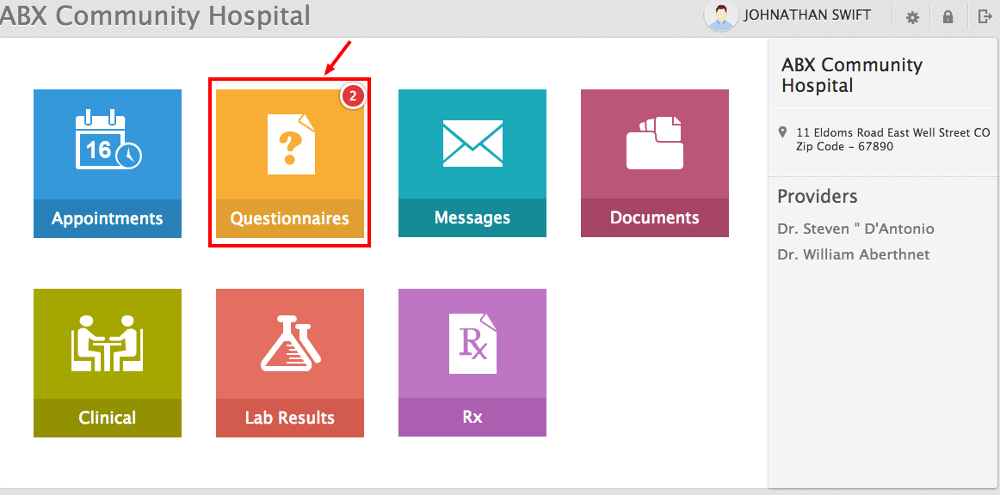
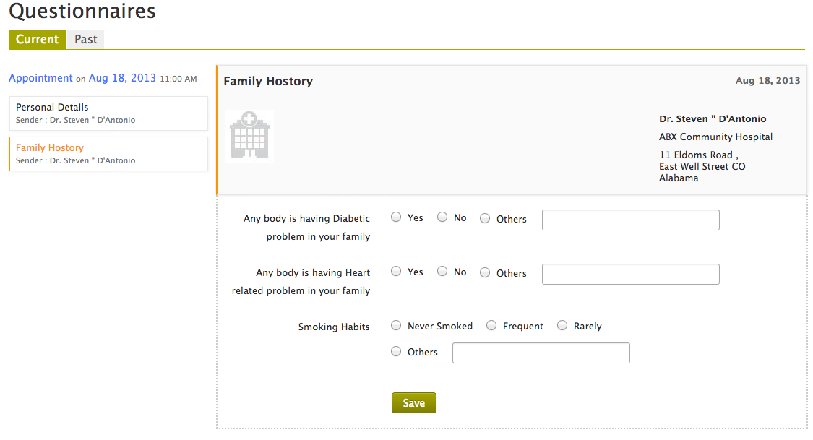

Patient Portal - User Guide
From ChARM Patient Portal, you can fill pre-appointment questionnaires shared by your practice prior to your office visit.
This significantly reduces the time you spent in waiting room during appointment and helps your provider to know about you in advance.

You will get an email notification whenever your practice shares some questionnaires with you. In addition, a notification icon (with count) is shown on top right corner of ‘Questionnaires’ section if you have any questionnaires to fill.
To fill pre-appointment questionnaires
The ‘Current’ tab lists the questionnaires to be filled for your upcoming appointment. Fill all the questionnaires listed under the ‘Current’ tab.
The ‘Past’ tab lists the questionnaires filled during previous consultations.
